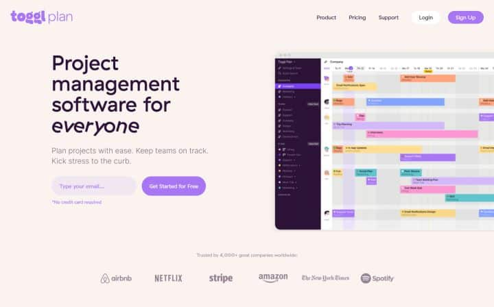
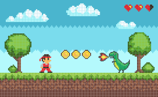
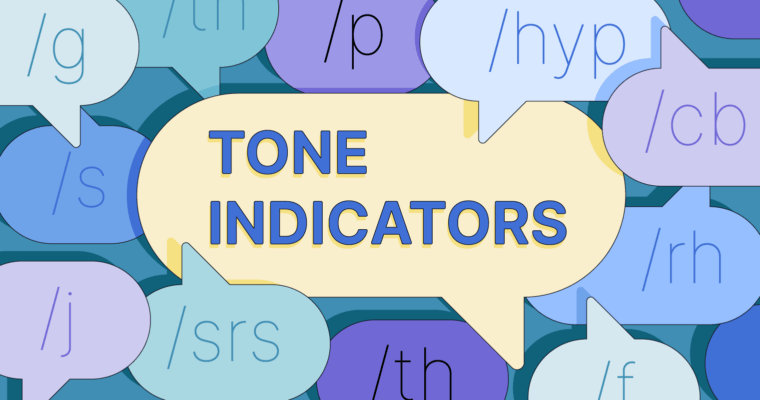

Toggl Plan - Project 1
Toggl Plan is beautifully simple project management software. It’s a tool that needs no training. And, your team can start using it from day one to plan and manage projects. Toggl Plan comes with three primary features — Project timelines, team timelines, and boards. Depending on your PM method, you can either use timelines or boards to manage your project. Project timelines make planning projects a breeze. To plan project tasks, simply drag and drop tasks on the timeline. Also, you can add color-coded milestones to the timeline.
Puzzle game Project - 2
This is a puzzle game, your task is to avoid hazards, collect coins and reach the finish line!
Tone Indicator - Project 3
Have you ever accidentally offended someone over text message? It happens. Unlike in speech, tone can be hard to convey and detect in written communication. Once you hit send, it’s up to the recipient to interpret your tone. This is where tone indicators come into play. Tone indicators are simple symbols or letter combinations that show what sentiment a message is meant to express. Tone indicators are used when communicating over text message and in chat rooms, forums, dating apps, and other platforms. If you’ve never used tone indicators before, keeping track of them can be difficult. Here, we’ve gathered the most popular tone indicators into a handy guide for understanding and using them effectively.